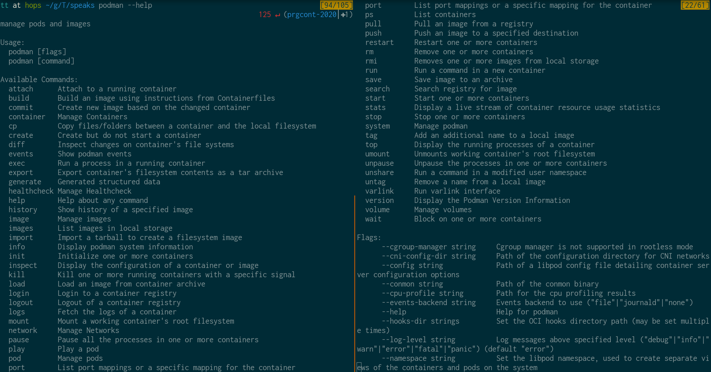

class: center, middle # Container Tooling by Red Hat ## Tomas Tomecek ## Franta Lachman --- class: center, middle # Docker done right --- class: center, middle # ~~Docker done right~~ ## (You make your own opinion :) --- class: center, middle # Who's Franta and Tomas? --- # The tools * podman * buildah * skopeo * udica * ~~CRI-O~~ --- # The background tools * crun * bubblewrap * fuse-overlayfs * conmon * containers/{storage,image} --- class: center, middle # podman --- class: center, middle  --- # podman (?) * github.com/containers/libpod * "The manager of pods" * The same CLI as docker command --- # Rootless containers (?) --- # Podman security features --- # Features in podman and not in docker (F) - [upstream table](https://github.com/containers/libpod/blob/master/transfer.md#missing-commands-in-docker) - UX enhancements - not-merged proposals for `docker` - pod manipulation --- # Features in podman and not in docker I/VII * podman container checkpoint * podman container restore ``` Checkpoints one or more running containers. The container name or ID can be used. Usage: podman container checkpoint [flags] CONTAINER [CONTAINER...] Examples: podman container checkpoint --keep ctrID podman container checkpoint --all podman container checkpoint --leave-running --latest ``` --- # Features in podman and not in docker II/VII * podman container cleanup * podman container exists * podman container refresh * podman container runlabel * podman healthcheck run ``` Examples: podman container cleanup --latest podman container cleanup ctrID1 ctrID2 ctrID3 podman container cleanup --all podman container exists containerID podman container exists myctr || podman run --name myctr [etc...] ``` --- # Features in podman and not in docker III/VII * podman image exists * podman image sign | podman image trust * podman image tree ``` $ podman image tree --whatrequires e7d92cdc71fe Image Layers └── ID: 5216338b40a7 Size: 5.857MB Top Layer of: [docker.io/library/alpine:latest] ├── ID: c07692cd6afc Size: 61.23MB │ ├── ID: 680cc73971b8 Size: 0B │ └── ID: 79328d443872 Size: 0B ├── ID: b876d8a9551e Size: 61.23MB │ ├── ID: a2cdfa446b03 Size: 0B │ └── ID: 003c10d311c8 Size: 0B └── ID: 92a673328d5d Size: 61.23MB Top Layer of: [localhost/hello:latest] ├── ID: 33a5ba140a3f Size: 0B └── ID: 45b17e59ed3b Size: 0B ``` --- # Features in podman and not in docker IV/VII * podman mount * podman umount ``` (Un)mount a working container's root filesystem. ``` --- # Features in podman and not in docker V/VII * podman varlink ``` Run varlink interface Description: Run varlink interface. Podman varlink listens on the specified unix domain socket for incoming connects. Tools speaking varlink protocol can remotely manage pods, containers and images. Usage: podman varlink [flags] [URI] Examples: podman varlink unix:/run/podman/io.podman podman varlink --timeout 5000 unix:/run/podman/io.podman ``` --- # Features in podman and not in docker VI/VII * podman system service ``` Run API service Description: Run an API service Enable a listening service for API access to Podman commands. ``` --- # Features in podman and not in docker VII/VII * podman play * podman play kube * podman generate * podman generate kube * podman pod * --- # podman → k8s (T) --- # buildah (F) --- # skopeo (T) --- # toolbox (F) *Toolbox is a tool that offers a familiar package based environment for developing and debugging software that runs fully unprivileged using Podman.* * Provide a CLI convenience interface to run containers (via `podman`) easily. * Support for Developer and Debugging/Management use cases. ``` [user@hostname ~]$ toolbox create Created container: fedora-toolbox-30 Enter with: toolbox enter [user@hostname ~]$ toolbox enter ⬢[user@toolbox ~]$ ``` --- # Demos * intro (F) * rootless containers ? * building images (F) * basic * speeding up builds * security (T) * basic * udica * from podman to k8s (T) --- class: middle # The end * <span class="fa fa-github-square"></span> [github.com/TomasTomecek/speaks](https://github.com/TomasTomecek/speaks) * <span class="fa fa-github-square"></span> [github.com/containers](https://github.com/containers) * <span class="fa fa-twitter-square"></span> [@TomasTomec](https://twitter.com/TomasTomec) * <span class="fa fa-globe"></span> [blog.tomecek.net](https://blog.tomecek.net/)